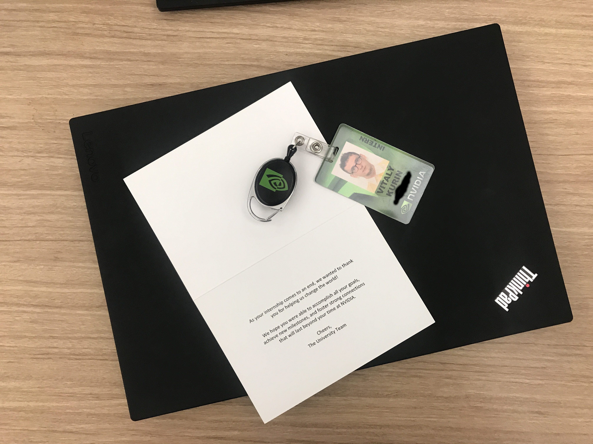

That's my last day as a summer research intern at NVIDIA. This has been a fantastic experience! I learned a lot, had an interesting problem to work on and had computers to do that. I met a bunch of great people as well! Now, I'd love to share what I've learned during this summer.
Everyone fails. All the brilliant people around you have failed at some point. Probably, that's why they are intelligent! They've learnt from their mistakes. It hurts to fail, however, if you stress too much about it, it's not gonna help. I'm glad I had a lot of stressful experience before so that it did not take me by surprise. Sometimes nothing works, you feel down, but it will change if you persist. Do something else. Running was helpful to me. I had a rule, that no matter what happens, I have to run, even if I do not feel like it. After a couple of minutes, you start feeling better. Try it!
This is very important. And I fail with this one occasionally. Time is essential, don't waste it. If you do experiments, but don't document them properly, there is no use in these experiments. Moreover, you might mess up the results, and they will not be reliable. You can't afford that! Script everything so that it's automated as much as possible. Otherwise, you'll forget to write it up.
Surprisingly, NVIDIA has a lot of GPUs. Amount of compute you get is insane. However, it's not infinite. And the appetites of the members of your team are much higher than in a university lab. Plan your experiments, try to automate this as well so that your server utilisation does not drop. However, make sure you are not burning your resources for nothing.
Nothing incredibly surprising here, but we are all guilty doing that. It's very tempting to come to a conclusion based on a single experiment. Don't do it. Try running more and average the results.
It's incredibly tempting at the beginning of the project to plan it years ahead and write an overengineered beast which is too rigid to modify. Also, it's tempting to write a couple of lines to run a quick experiment to confirm some hypothesis. And then another one. And another one. And then you have a huge blob which also gets hard to modify and track the exact parameters of the experiments. I do not have a perfect answer for that. Probably, quick modifications on a separate branch will do the job, and then you can add an argument which adds your change if it's useful. I will be happy to get any advice on that.
That's an important one when you have a lot of compute. It's tempting to run hundred of jobs a day, but it's not very appealing to document all of them. Personally, I believe it's better to experiment less, but stare at your results, add tons of metrics to analyse them. Experiments are not the final goal, but the conclusions are.
This is one of the best skills I learned at NVIDIA. You can discuss as many crazy ideas as you want. It is easy to chat and produce them. However, it's hard to identify which are good and do time estimate. Try to choose those which are more straightforward, easier to implement, but which will have the most significant impact.
This one is one of my weakest points. Sometimes I write something vague so that when I think about it more, I do not fully understand what I meant by it. Of course, the other person will have even more troubles understanding you. Weekly team meetings and working on the paper helped me a lot in developing the skill.
That's it! I'm glad you've read it! If you agree or disagree with something or want to share your experience, ping me. If you are interested in the work we've done with Bryan, Saad and Shimon, have a look at our Arxiv submission! The code will follow soon! And by the way, NVIDIA is hiring, contact Bryan if you are interested.
